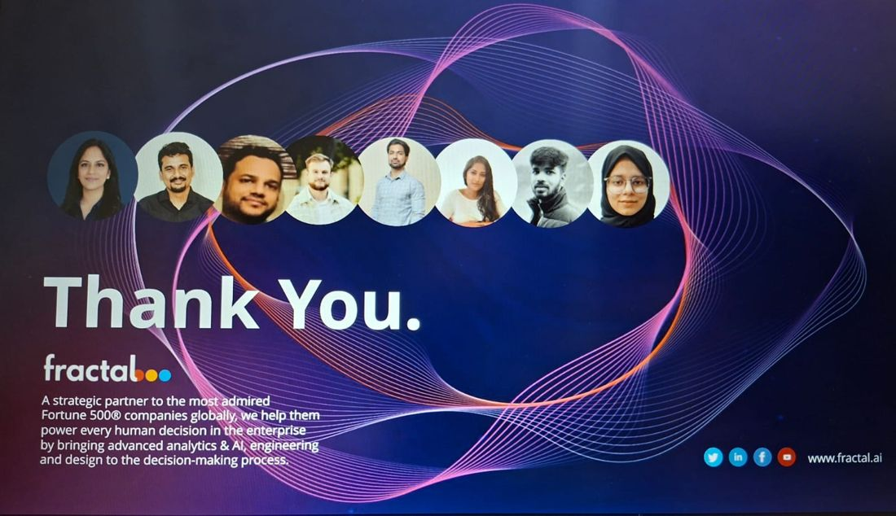

Information Technology student building web applications and machine learning projects with Java, Python and React. Recently interned at Fractal Analytics on a Generative Engine Optimization product.
I'm a final-year B.E. Information Technology student at Stanley College of Engineering and Technology for Women, with hands-on experience in full-stack development, AI, machine learning and frontend engineering. At Fractal Analytics I turned product requirements and Figma prototypes into React components, studied how the frontend and backend fit together, and built Playwright automation for AI platforms. I enjoy building practical technology and want to contribute to innovative engineering teams.

Select a certificate to view it.